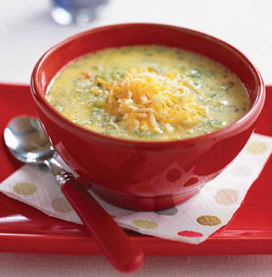

Cheese Soup
Recipe by: Alton Brown
http://www.foodnetwork.com/recipes/alton-brown/cheese-soup-recipe/index.html

Cook Time:
45 mins.
Level:
Easy
Yield:
about 1 1/2 quarts (about 4 servings)
Ingredients:
- 2 Tablespoons unsalted butter
- 5 Ounces small diced onion (approx. 1 cup)
- 5 Ounces small diced carrot (approx. 1 cup)
- 5 Ounces small diced celery (approx. 1 cup)
- 1/2 Teaspoon salt for sweating vegetables, plus more if needed at end of cooking
- 3 Tablespoons all-purpose flour
- 1 Quart chicken broth, heated to a simmer
- 1 Tablespoon minced garlic
- 1 bay leaf
- 1 Cup heavy cream
- 10 Ounces Fontina, shredded
- 1 Teaspoon Marsala wine
- 1 Teaspoon Worcestershire sauce
- 1/2 Teaspoon hot sauce
- 1/2 Teaspoon white pepper
Directions:
- Melt butter in large heavy-bottomed soup pot over medium heat. Add onion, carrot, celery, and salt. Sweat
for 5 to 10 minutes or until the vegetables begin to soften, stirring occasionally. Sift the flour over the
vegetables and cook, stirring constantly, for 2 to 3 minutes.
- Gradually add the chicken stock and bring to boil, stirring constantly. Reduce heat to low and add the
garlic and bay leaf. Cover and simmer for 30 minutes or until vegetables are soft.
- Remove bay leaf. Turn off the heat, add the heavy cream, and then puree with an immersion blender or in
a conventional blender*. Gradually add the cheese, 1 small handful at a time, and stir until melted before
adding next handful. Stir in the Marsala, Worcestershire sauce, hot sauce, and white pepper. Taste and add
additional salt if desired. If soup is not hot enough, return to a low heat until warmed through.
*When boiling hot liquids:
Remove liquid from the heat and allow to cool for at least 5 minutes. Transfer
liquid to a blender or food processor and fill it no more than halfway. If using a blender, release one corner of the
lid. This prevents the vacuum effect that creates heat explosions. Place a towel over the top of the machine, pulse
a few times then process on high speed until smooth.